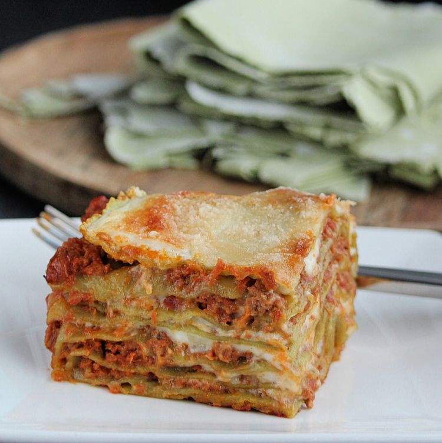

Lasagna Recipe

After years of tweaking this recipe, I've finally got it to where I want it.
Everyone raves about this lasagna just the way it is, although I'll probably
never stop tweaking it!
Ingredients
- 1 Pound of Bulk Italian Sausage
- 1 Pound of Ground Beef
- 1 Cup of Chopped Onion
- 4 cloves of Garlic, Minced
Steps
- Brown sausage and ground beef with onion and garlic in a large Dutch oven
or heavy pot over medium heat, cooking and stirring until meat is cooked through,
10 to 15 minutes. Drain and discard grease. Stir tomato sauce, crushed tomatoes,
Italian-style crushed tomatoes, tomato paste, basil, 2 tablespoons parsley, brown sugar,
salt, Italian seasoning, black pepper, fennel seeds, and 1/2 cup Parmesan cheese into
meat mixture. Bring to a boil, reduce heat to low, and simmer sauce for at least 1 hour
(up to 6 for best flavor). Stir occasionally.
- Meanwhile, place lasagna noodles into a deep bowl and cover with very hot tap water;
let soak for 30 minutes.
- Beat egg in a bowl and stir ricotta cheese, 2 tablespoons parsley, 1/2 teaspoon salt, and
nutmeg into egg until thoroughly combined.
- Preheat oven to 375 degrees F (190 degrees C).
Home Page